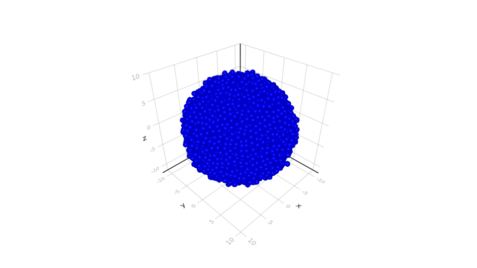

API
Model
AgentBasedModels.Model — Typemutable struct ModelBasic structure which contains the agent based model.
Examples
m = Model(); #Create empty model
addGlobal!(m,:x); #Add a global variable to the model
# Here there may be many more additionsAdd Parameters
AgentBasedModels.addGlobal! — Functionfunction addGlobal!(agentModel::Model, addvar::Symbol; updates="", randVar = Tuple{Symbol,String}[])Add a global variable to the model with optional update rules.
Examples
m = Model();
addGlobal!(m,:x);m = Model();
update = "
x= r #r is a random variable with μ=0. and σ=1.
"
addGlobal!(m,:x,updates=update,randVar=[(:r,Normal(0.,1.))]);function addGlobal!(agentModel::Model, addvar::Array{Symbol}; updates="", randVar = Tuple{Symbol,String}[])Add a set of global variables to the model with optional update rules.
Examples
m = Model();
addGlobal!(m,[:x,:y]);m = Model();
update = " #We update x but not y
x= r
"
addGlobal!(m,[:x,:y],updates=update,randVar=[(:r,Normal,0,1)]);AgentBasedModels.addLocal! — FunctionaddLocal!(agentModel::Model, addvar::Symbol; updates="", randVar = Tuple{Symbol,String}[])Add a local variable to the model with optional update rules.
Examples
m = Model();
addLocal!(m,:x);m = Model();
update = "
x= r #r is a random variable with μ=0. and σ=1.
"
addLocal!(m,:x,updates=update,randVar=[(:r,Normal,0.,1.)]);addLocal!(agentModel::Model, addvar::Array{Symbol}; updates="", randVar = Tuple{Symbol,String}[])Add a local variable to the model with optional update rules.
Examples
m = Model();
addGlobal!(m,[:x,:y]);m = Model();
update = " #We update x but not y
x= r
"
addGlobal!(m,[:x,:y],updates=update,randVar=[(:r,Normal,0,1)]);AgentBasedModels.addLocalInteraction! — Functionfunction addLocalInteraction!(agentModel::Model, addvar::Symbol, addeqs::String; randVar = Tuple{Symbol,String}[])Add a local interaction to the model.
Examples
m = Model();
addLocal!(m,[:x,:y]);
interaction = "
d₁ = sqrt((x₁-x₂)^2+(y₁-y₂)^2)
"
addLocalInteraction!(m,:d,interaction);function addLocalInteraction!(agentModel::Model, addvar::Symbol, addeqs::String; randVar = Tuple{Symbol,String}[])Add a local interaction to the model.
Examples
m = Model();
addLocal!(m,[:x,:y]);
interaction = "
d₁ = sqrt((x₁-x₂)^2+(y₁-y₂)^2)
dAbs₁ = abs(x₁-x₂)+abs(y₁-y₂)
"
addLocalInteraction!(m,[:d,:dAbs],interaction);AgentBasedModels.addVariable! — Functionfunction addVariable!(agentModel::Model, addvar::Symbol, addeqs::String)Add a variable described by an Ordinary or Stochastic Differential Equation.
Examples
m = Model();
eq = "
dxdt = -x #Exponential decay
"
addVariable!(m,:x,eq);m = Model();
eq = "
dxdt = -x+ξ #Wiener process
"
addVariable!(m,:x,eq);function addVariable!(agentModel::Model, addvar::Symbol, addeqs::String)Add a variable described by an Ordinary or Stochastic Differential Equations.
Examples
m = Model();
eq = "
dxdt = -x #Exponential decay
dydt = -y + ξ #Wiener process
"
addVariable!(m,[:x,:y],eq);AgentBasedModels.addInteraction! — Functionfunction addInteraction!(agentModel::Model, addvar::Symbol, addeqs::String)Add a interaction parameters to the model. Differently to the local interactions, this parameters will be updated inside the integration steps of the differential equations.
Examples
m = Model();
eq = "
dxdt = -x+g*ξ #Wiener process with an additional interaction
"
addVariable!(m,:x,eq);
interaction = "
g₁ += 1./sqrt((x₁-x₂)^2+(y₁-y₂)^2) #The difussion will be affected by the presence of other particles around them.
"
addInteraction!(m,:g,interaction);function addInteraction!(agentModel::Model, addvar::Symbol, addeqs::String)Add a interaction parameters to the model. Differently to the local interactions, this parameters will be updated inside the integration steps of the differential equations.
Examples
m = Model();
eq = "
dxdt = -x+g*ξ+p #Wiener process with an additional interaction
"
addVariable!(m,:x,eq);
interaction = "
g₁ += 1./sqrt((x₁-x₂)^2+(y₁-y₂)^2) #The difussion will be affected by the presence of other particles around them.
p₁ += 1./(abs(x₁-x₂)+abs(y₁-y₂)) #The difussion will be affected by the presence of other particles around them.
"
addInteraction!(m,[:g,:p],interaction);Special
AgentBasedModels.addDivision! — Functionfunction addDivision!(agentModel::Model, condition::String, update::String; randVar = Tuple{Symbol,String}[])Function that adds a division process of the particles to the model. Cells divide under condition and update the new parameters with update.
Examples
m = Model();
addLocal!(m,[:g,:tDiv]); #Add two local variables, g and the time of division tDiv
condition =
"
tDiv < t
"
update =
"
g₁ = gₚ*r #Asymmetric split of the component between the two daughter particles
g₁ = tDivₚ+1.
g₂ = gₚ*(1-r)
g₂ = tDivₚ+1.
"
addDivision!(m,condition,update,randVar=[(:r,"Uniform",0.,1.)])AgentBasedModels.addPseudopode! — Functionfunction addPseudopode!(agentModel::Model, var::Symbol, tVar::Symbol, neighbourCondition::String, force::String, updateChange::String; randVar = Tuple{Symbol,String}[])Add a pseudopode force.
Examples
m = Model()
addLocal!([:x,:y])
neighbourCondition =
"
sqrt((x₁-x₂)^2+(y₁-y₂)^2) < 2.
"
force =
"
f = sqrt((x₁-x₂)^2+(y₁-y₂)^2)*exp(-sqrt((x₁-x₂)^2+(y₁-y₂)^2))
"
updateChange =
"
tPseudo = t + σPseudo
"
addPseudopode!(m, :f, :tPseudo, condition, force, updateChange, randVar = [(:σPseudo,"Uniform",1.,2.)])Neighborhoods
Missing docstring for setNeighborhoodFull!. Check Documenter's build log for details.
Missing docstring for setNeighborhoodAdjacency!. Check Documenter's build log for details.
Missing docstring for setNeighborhoodGrid!. Check Documenter's build log for details.
Compile
AgentBasedModels.compile! — FunctionMain function that plugs in all the declared parts of the Agent Based Model and generates an evolution function.
Arguments
- agentModel (Model) Agent Model to be compiled.
Optative keywork arguments
- integrator (String) Integrator to be implemented in the model ("euler" by default)
- saveRAM (Bool) Indicate if the steps have to be saved in a CommunityInTime structure. False by default.
- saveVTK (Bool) Indicate if the steps have to be saved in a VTK file (experimental). False by default.
- positionsVTK (Array{Symbols}) The declared symbols that will correspond to the VTK spatial positions. [:x,:y,:z] by default.
- debug (Bool) Print the cleaned compiled function for debugging purposes. False by default.
Returns
nothing
Community
AgentBasedModels.Community — TypeBasic structure keeping the parameters of all the agents in the current simulation of a model.
Elements
- t::AbstractFloat Time of the community
- N::Int Number of particles in the community
- declaredSymb::Dict{String,Array{Symbol}} Dictionary storing the names of all the parameters declared in model according to the respective fields where they have been declared.
- var::Array{AbstractFloat,2} 2D Array with all the agents in rows and all the corresponding values of the variables in columns.
- inter::Array{AbstractFloat,2} 2D Array with all the agents in rows and all the corresponding values of the interaction parameters in columns.
- loc::Array{AbstractFloat,2} 2D Array with all the agents in rows and all the corresponding values of the local parameters in columns.
- locInter::Array{AbstractFloat,2} 2D Array with all the agents in rows and all the corresponding values of the local interaction parameters in columns.
- glob::Array{AbstractFloat,2} 2D Array with all the agents in rows and all the corresponding values of the global parameters in columns.
- ids::Array{Int,2} 2D Array with all the agents in rows and all the corresponding values of the identities in columns
Constructors
function Community(agentModel::Model; N::Int=1, t::AbstractFloat=0.)Arguments
- agentModel (Model) Agent Model structure
Additional keyword arguments
- N (Int) Number of Agent with wich start the model. N=1 by default.
- t (AbstractFloat) Time of the community at creation. t=1. by default
Example
julia> model = Model();
julia> addLocal!(model,:x);
julia> community = Community(model, N=2, t=0.5)
Community(0.5, 2, Dict{String,Array{Symbol,N} where N}("glob" => [],"ids" => [],"locInter" => [],"loc" => [:x],"inter" => [],"var" => []), Array{AbstractFloat}(undef,2,0), Array{AbstractFloat}(undef,2,0), AbstractFloat[0.0; 0.0], AbstractFloat[0.0; 0.0], AbstractFloat[], Array{Int64}(undef,2,0))
julia> community.N
2
julia> community.t
0.5
julia> community.declaredSymb
Dict{String,Array{Symbol,N} where N} with 6 entries:
"glob" => Symbol[]
"ids" => Symbol[]
"locInter" => Symbol[]
"loc" => [:x]
"inter" => Symbol[]
"var" => Symbol[]Base extended methods
In addition for directly accessing the elements of the structure, the following methods from the Base Package has been extended to access the elements of the Community.
function Base.getindex(a::Community,var::Symbol)Returns an array with all the values of the declared symbol for all the agents.
Example
julia> model.N
2
julia> community.declaredSymb["loc"]
1-element Array{Symbol,1}:
:x
julia> community[:x]
2-element Array{AbstractFloat,1}:
0.0
0.0function Base.setindex!(a::Community,v::Array{<:AbstractFloat},var::Symbol)Sets the values of a declared symbol to the values of the array v. The array has to be the same length as N.
Example
julia> community[:x] = [1.,2.];
julia> community[:x]
2-element Array{Float64,1}:
1.0
2.0function Base.setindex!(a::Community,v::Number,var::Symbol)Sets the values of a declared symbol to the given value v.
Example
julia> community[:x] = 2.;
julia> community[:x]
2-element Array{Float64,1}:
2.0
2.0AgentBasedModels.CommunityInTime — TypeStructure that basically stores an array of Coomunities at different time points.
Elements
- com (Array{Community}) Array where the communities are stored
Constructors
function CommunityInTime()Instantiates an empty CommunityInTime folder.
Base extended methods
function Base.push!(a::CommunityInTime,c::Community)Adds one Community element to the CommunityInTime object.
function Base.length(a::CommunityInTime)Returns the number of time points of the Community in time.
function Base.getindex(a::CommunityInTime,var::Int)
function Base.firstindex(a::CommunityInTime,var::Int)
function Base.lastindex(a::CommunityInTime,var::Int)Returns the Community of the corresponding entry.
function Base.getindex(a::CommunityInTime,var::Symbol)Returns a 2D array with rows being the agents and the rows the timepoints. If the agent did not existed for certain time point, the extry is filled with a NaN value.
Initialisation functions
AgentBasedModels.latticeCompactHexagonal — FunctionMake a lattice with compact hexagonal structure.
Arguments
- box (Array) Box to be filled with spheres of radius r. e.g. 2D box = [[0,1],[0,1]], 3D box = [[0,1],[1,2],[0,4]]
- r (Number) Radius of the sphere
Optional keyword arguments
- noiseRatio (Number) Noise ratio to add to the center of the cells. Default 0.
- holesRatio (Number) Probability of holes in lattice. Default 0.
Returns
[posX,posY,posZ] Where pos are arrays with the positions of the cells for each component.
AgentBasedModels.latticeCubic — FunctionMake a lattice with cubic structure.
Arguments
- box (Array) 3D Box to be filled with spheres of radius r. e.g. [[0,1],[1,2],[0,4]]
- r (Number) Radius of the sphere
Optional keyword arguments
- noiseRatio (Number) Noise ratio to add to the center of the cells. Default 0.
- holesRatio (Number) Probability of holes in lattice. Default 0.
Returns
[posX,posY,posZ] Where pos are arrays with the positions of the cells for each component.
AgentBasedModels.extrude — FunctionRemove all points that are not inside a specified volume.
Arguments
- xyz (Array{Array{Any}}) Array containing all the list of position parameters.
- f (Function) Function that returns true if the position is inside the volume.
Returns
Array{Array{Any}} Extruded points.
AgentBasedModels.extrude! — FunctionRemove all points that are not inside a specified volume.
Arguments
- com (Community) Community to extrude.
- s (Array{Symbol}) Array containing the list of symbols to use as position parameters.
- f (Function) Function that returns true if the position is inside the volume.
Returns
nothing
AgentBasedModels.fillVolumeSpheres — FunctionFill volume with spheres of certain radius.
In brief, the model generates a box with spheres in hexagonal packaging, removes the ones outside the volume. The positions are perturbed by the noise term and finally the system is left to relax by a simple particle model.
Parameters
- f (Function) Function that returns true if center of sphere is inside the volume
- box (Array{Float,2}) Maximum box where to fill the volumes.
- r (Number) Radius of the spheres
Optional keyword parameters
- N (Int) Maximum number of particles inside the volume. If NaN (default), there is not upper bound.
- noise (Number) Noise ratio used to perturb the particles from the hexagonal lattice.
- platform (String) Platform in which perform the relaxation step after the noise perturbation.
Example
julia> using AgentBasedModels;
julia> f(x,y,z) = sqrt(x^2+y^2+z^2) < 10;
julia> pos = fillVolumeSpheres(f,[[-10,-10,-10],[10,10,10]],1,noise=0.25); Figure rendered with Makie.jl using meshscatter function.